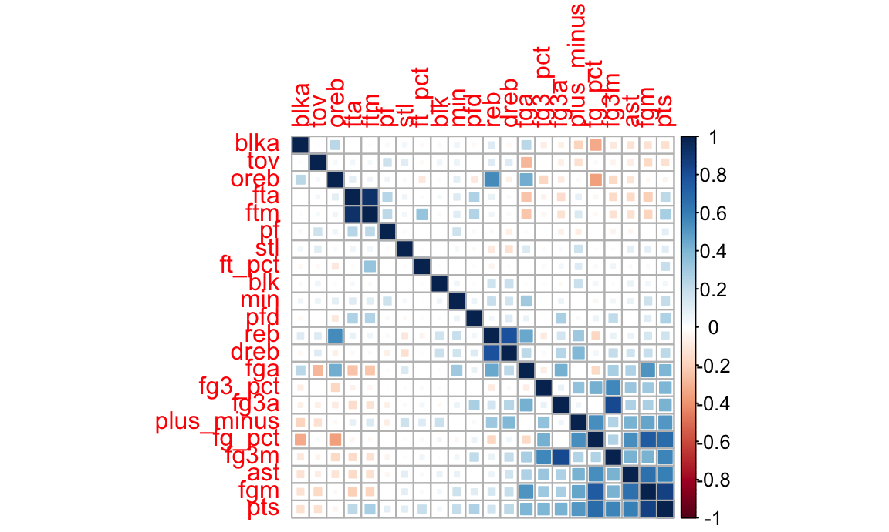
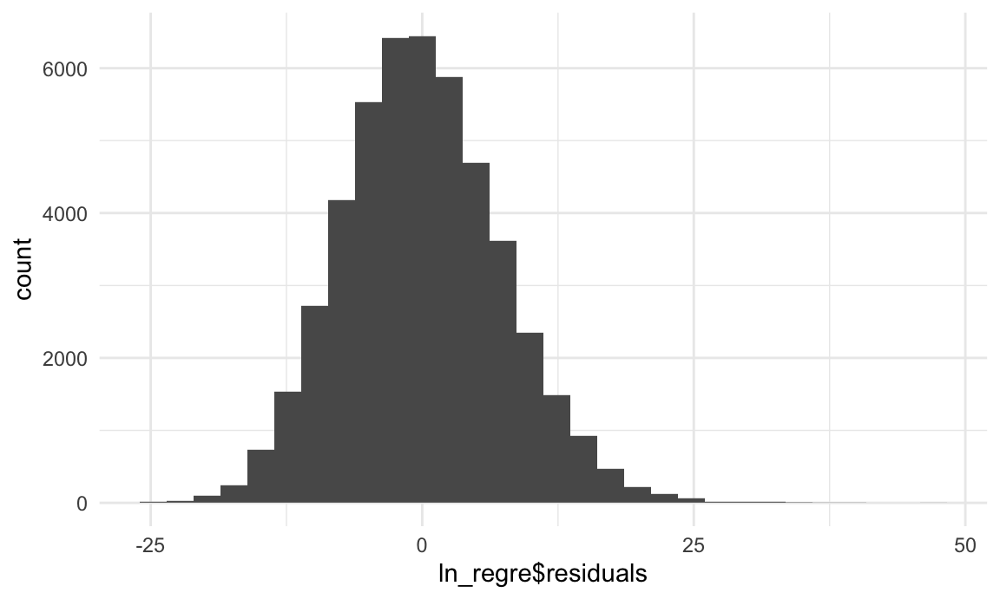

Predict for Score
library(tidyverse)
library(hexbin)
library(jsonlite)
library(httr)
library(patchwork)
library(ggplot2)
library(corrplot)
library(stringr)
library(caret)
library(plotly)
library(ggridges)
library(GGally)
library(modelr)
knitr::opts_chunk$set(
fig.width = 6,
fig.asp = .6,
out.width = "90%"
)
theme_set(theme_minimal() + theme(legend.position = "bottom"))
options(
ggplot2.continuous.colour = "viridis",
ggplot2.continuous.fill = "viridis"
)
scale_colour_discrete = scale_colour_viridis_d
scale_fill_discrete = scale_fill_viridis_d
box_score_all = read_csv("./data2/box_score_all.csv")
regre_df =
box_score_all %>%
select(-c(1:7)) %>%
select(-ends_with("rank")) %>%
mutate(wl = recode(wl, "W" = 1, "L" = 0),
wl = as.factor(wl)) Regression Exploration
In this part, we explore each game in the past 20 years, try to find some important variables that might affect the result of the game. By this process, we also can get some insight on choosing potential parameters for model building. Since we use the smae data set as the data we use to build logistic regression, the Exploratory Analysis part can just click here to see the Exploratory Analysis.
Correlation Matrix
Further, we can draw a correlation map to exam correlation of variables to help us select variables when building model.
regre_df =
regre_df %>%
mutate(
min = as.numeric(min),
fgm = as.numeric(fgm),
fga = as.numeric(fga),
fg_pct = as.numeric(fg_pct),
fg3m = as.numeric(fg3m),
fg3a = as.numeric(fg3a),
fg3_pct = as.numeric(fg3_pct),
ftm = as.numeric(ftm),
fta = as.numeric(fta),
ft_pct = as.numeric(ft_pct),
oreb = as.numeric(oreb),
dreb = as.numeric(dreb),
reb = as.numeric(reb),
ast = as.numeric(ast),
tov = as.numeric(tov),
stl = as.numeric(stl),
blk = as.numeric(blk),
blka = as.numeric(blka),
pf = as.numeric(pf),
pfd = as.numeric(pfd),
pts = as.numeric(pts),
plus_minus = as.numeric(plus_minus)
)
corr <- cor(regre_df[-1])
corrplot(corr, method = "square", order = "FPC")
After ruling out variables with strong correlation, we include variables as follow: Dependent variable is the score of each game, denoted by pts (points). Independent variables are selected from both offensive aspect and defensive aspect.
For the offensive level, variables include:
- fg3_pct: proportion of three points shooting
- fg_pct: proportion of field goals attempted
- fg_pct: proportion of free throw
- oreb: average offensive rebounds per game
- ast: average assists per games
As for the defensive level, variables include:
- stl: steals of each game
- blk: blocks of each game
- dreb: defensive rebounds of each game
- tov: turnovers of each game
- pf: personal foul of each game
Modelling
Use step function to choose a model by AIC in a Stepwise algorithm.
ln_regre = lm(pts ~fg_pct+fg3_pct+ft_pct+oreb+dreb+ast+stl+blk+tov+pf,data = regre_df)
summary(ln_regre)##
## Call:
## lm(formula = pts ~ fg_pct + fg3_pct + ft_pct + oreb + dreb +
## ast + stl + blk + tov + pf, data = regre_df)
##
## Residuals:
## Min 1Q Median 3Q Max
## -25.617 -5.038 -0.342 4.710 46.223
##
## Coefficients:
## Estimate Std. Error t value Pr(>|t|)
## (Intercept) -25.229423 0.515913 -48.90 <2e-16 ***
## fg_pct 138.594897 0.803307 172.53 <2e-16 ***
## fg3_pct 14.564180 0.325892 44.69 <2e-16 ***
## ft_pct 24.290515 0.331887 73.19 <2e-16 ***
## oreb 0.802525 0.009228 86.96 <2e-16 ***
## dreb 0.563889 0.006492 86.86 <2e-16 ***
## ast 0.487421 0.008136 59.91 <2e-16 ***
## stl 0.565725 0.011870 47.66 <2e-16 ***
## blk -0.152531 0.013351 -11.43 <2e-16 ***
## tov -0.682900 0.008899 -76.74 <2e-16 ***
## pf 0.404912 0.007667 52.81 <2e-16 ***
## ---
## Signif. codes: 0 '***' 0.001 '**' 0.01 '*' 0.05 '.' 0.1 ' ' 1
##
## Residual standard error: 7.334 on 47819 degrees of freedom
## Multiple R-squared: 0.6916, Adjusted R-squared: 0.6916
## F-statistic: 1.072e+04 on 10 and 47819 DF, p-value: < 2.2e-16linear.step = step(ln_regre,direction="both")## Start: AIC=190616
## pts ~ fg_pct + fg3_pct + ft_pct + oreb + dreb + ast + stl + blk +
## tov + pf
##
## Df Sum of Sq RSS AIC
## <none> 2572088 190616
## - blk 1 7021 2579109 190744
## - fg3_pct 1 107426 2679514 192571
## - stl 1 122170 2694258 192834
## - pf 1 150024 2722112 193325
## - ast 1 193050 2765138 194076
## - ft_pct 1 288123 2860211 195692
## - tov 1 316762 2888850 196169
## - dreb 1 405789 2977877 197621
## - oreb 1 406778 2978867 197637
## - fg_pct 1 1601094 4173182 213762linear.step %>% broom::tidy() %>% knitr::kable()| term | estimate | std.error | statistic | p.value |
|---|---|---|---|---|
| (Intercept) | -25.2294230 | 0.5159129 | -48.90248 | 0 |
| fg_pct | 138.5948965 | 0.8033069 | 172.53044 | 0 |
| fg3_pct | 14.5641804 | 0.3258922 | 44.69017 | 0 |
| ft_pct | 24.2905146 | 0.3318872 | 73.18906 | 0 |
| oreb | 0.8025245 | 0.0092283 | 86.96336 | 0 |
| dreb | 0.5638889 | 0.0064921 | 86.85749 | 0 |
| ast | 0.4874214 | 0.0081360 | 59.90906 | 0 |
| stl | 0.5657252 | 0.0118704 | 47.65846 | 0 |
| blk | -0.1525314 | 0.0133510 | -11.42469 | 0 |
| tov | -0.6829004 | 0.0088988 | -76.74036 | 0 |
| pf | 0.4049123 | 0.0076670 | 52.81257 | 0 |
The adjusted R square for the full model is 0.6916, that is to say 69.16% of variances in the response variable can be explained by the predictors.
ln_regre= lm(pts ~fg_pct+fg3_pct+ft_pct+oreb+dreb+ast+stl+blk+tov+pf,data = regre_df)
summary(ln_regre)##
## Call:
## lm(formula = pts ~ fg_pct + fg3_pct + ft_pct + oreb + dreb +
## ast + stl + blk + tov + pf, data = regre_df)
##
## Residuals:
## Min 1Q Median 3Q Max
## -25.617 -5.038 -0.342 4.710 46.223
##
## Coefficients:
## Estimate Std. Error t value Pr(>|t|)
## (Intercept) -25.229423 0.515913 -48.90 <2e-16 ***
## fg_pct 138.594897 0.803307 172.53 <2e-16 ***
## fg3_pct 14.564180 0.325892 44.69 <2e-16 ***
## ft_pct 24.290515 0.331887 73.19 <2e-16 ***
## oreb 0.802525 0.009228 86.96 <2e-16 ***
## dreb 0.563889 0.006492 86.86 <2e-16 ***
## ast 0.487421 0.008136 59.91 <2e-16 ***
## stl 0.565725 0.011870 47.66 <2e-16 ***
## blk -0.152531 0.013351 -11.43 <2e-16 ***
## tov -0.682900 0.008899 -76.74 <2e-16 ***
## pf 0.404912 0.007667 52.81 <2e-16 ***
## ---
## Signif. codes: 0 '***' 0.001 '**' 0.01 '*' 0.05 '.' 0.1 ' ' 1
##
## Residual standard error: 7.334 on 47819 degrees of freedom
## Multiple R-squared: 0.6916, Adjusted R-squared: 0.6916
## F-statistic: 1.072e+04 on 10 and 47819 DF, p-value: < 2.2e-16linear.step = step(ln_regre,direction="both")## Start: AIC=190616
## pts ~ fg_pct + fg3_pct + ft_pct + oreb + dreb + ast + stl + blk +
## tov + pf
##
## Df Sum of Sq RSS AIC
## <none> 2572088 190616
## - blk 1 7021 2579109 190744
## - fg3_pct 1 107426 2679514 192571
## - stl 1 122170 2694258 192834
## - pf 1 150024 2722112 193325
## - ast 1 193050 2765138 194076
## - ft_pct 1 288123 2860211 195692
## - tov 1 316762 2888850 196169
## - dreb 1 405789 2977877 197621
## - oreb 1 406778 2978867 197637
## - fg_pct 1 1601094 4173182 213762linear.step %>% broom::tidy() %>% knitr::kable()| term | estimate | std.error | statistic | p.value |
|---|---|---|---|---|
| (Intercept) | -25.2294230 | 0.5159129 | -48.90248 | 0 |
| fg_pct | 138.5948965 | 0.8033069 | 172.53044 | 0 |
| fg3_pct | 14.5641804 | 0.3258922 | 44.69017 | 0 |
| ft_pct | 24.2905146 | 0.3318872 | 73.18906 | 0 |
| oreb | 0.8025245 | 0.0092283 | 86.96336 | 0 |
| dreb | 0.5638889 | 0.0064921 | 86.85749 | 0 |
| ast | 0.4874214 | 0.0081360 | 59.90906 | 0 |
| stl | 0.5657252 | 0.0118704 | 47.65846 | 0 |
| blk | -0.1525314 | 0.0133510 | -11.42469 | 0 |
| tov | -0.6829004 | 0.0088988 | -76.74036 | 0 |
| pf | 0.4049123 | 0.0076670 | 52.81257 | 0 |
Model diagnostic
1). to check if the error term is normally distributed with mean 0.
ggplot(data = ln_regre , aes(x = ln_regre$residuals)) + geom_histogram()
Condition 1 is met.
2). to check if the error term is independent of the dependent variable.
ggplot(data = ln_regre, aes(x = ln_regre$fitted.values, y = ln_regre$residuals)) + geom_point() + geom_smooth(method = "lm")
Condition 2 is met as we cannot see an obvious tendency of errors.
Interpretation of model coefficients
Our final model for predicting game result is showing below.
\[Score=-25.229423 + 138.594897(fg_pct)+14.564180(fg3_pct)+24.290515(ft_pct)+0.802525(oreb)+\\ 0.563889(dreb)-0.487421(ast)+0.565725(stl)-0.152531(blk)-0.682900(tov)+0.404912(pf)\]
All variables selected are significant in this linear regression model.
For each additional 0.1 of proportion of field goals attempted, the points will increase 13.9.
For each additional 0.1 of proportion three points shooting, the points will increase 1.45.
For each additional 0.1 of proportion of free throw, the points will increase 2.43.
For each additional 1 of offensive rebounds per game, the points will increase 0.8.
For each additional 1 of defensive rebounds per games, the points will increase 0.56.
For each additional 1 of steals per game, the points will increase 0.57.
For each additional 1 of assists per game, the points will increase 0.45.
For each additional 1 of blocks per game, the points will decrease 0.15.
For each additional 1 of turnovers per game, the points will decrease 0.68.
For each additional 1 of personal foul per game, the points will decrease 0.4.
Model Conclusion
We have built a linear and logistic regression based on the NBA data. The adjusted R square for the linear regression model is 0.6916, which can explain the game score in a large extent and can help us to predict the result of a game more accurately.